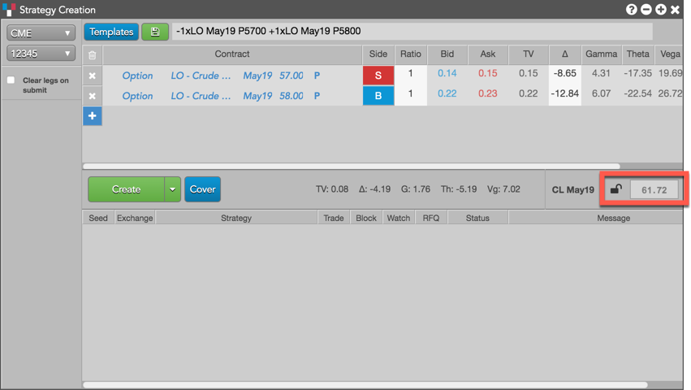
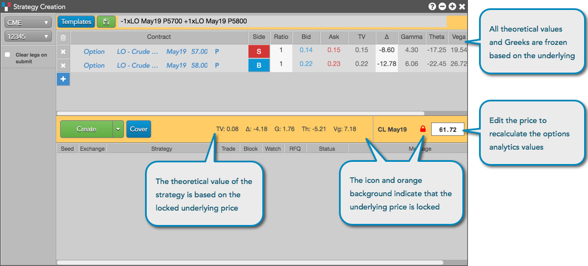

As an advanced options user, you can lock the Strategy Creation widget to view theoretical prices and options Greeks for an options strategy based on different underlying prices. You can also lock these values when covering your options strategy with an underlying futures contract.
Note: This functionality is not available for MX strategies.
The Strategy Creation widget can be locked as a stand-alone or linked widget. It is also locked by default when opened from a locked Options Chain widget.
After the options strategy is created, enter a price in the lock field and click the lock icon () to freeze the theoretical prices and Greeks for your underlying price.

When Strategy Creation is locked, the widget is highlighted orange and the theoretical prices and Greeks are frozen based on the underlying. However, you can edit the price in the lock field to recalculate the theoretical values and Greeks based on the edited underlying price.

Note: Covering an options strategy in Strategy Creation locks the widget for advanced options users.
{% include covered.html %}